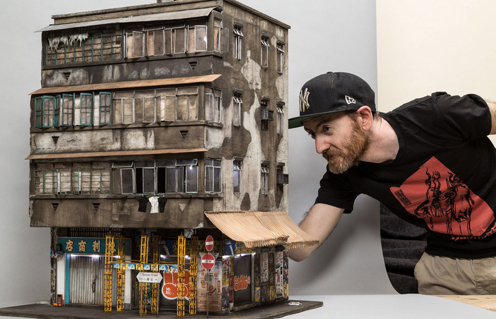

Joshua Smith
Joshua Smith is a miniaturist and former stencil artist based in Norwood, South Australia. With a career spanning 17 years he has showcased his work in London, Paris, Berlin, New York, Japan and all over Australia in over 100 exhibitions.
Formerly a self taught stencil artist Josh refocused his career to establishing Espionage Gallery, an Art Gallery based in Adelaide, South Australia showcasing both emerging and well established local, interstate and international artists.
In 2015 after the closure of Espionage Gallery Josh refocused back onto his own career this time as a self taught miniaturist. His miniature works focus on the often overlooked aspects of the urban environment such as grime, rust, decay to discarded cigarettes and graffiti. More of his work can be found at: www.iknowjoshuasmith.com